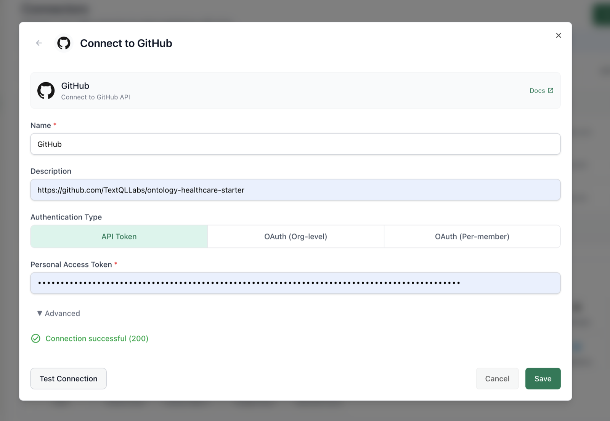
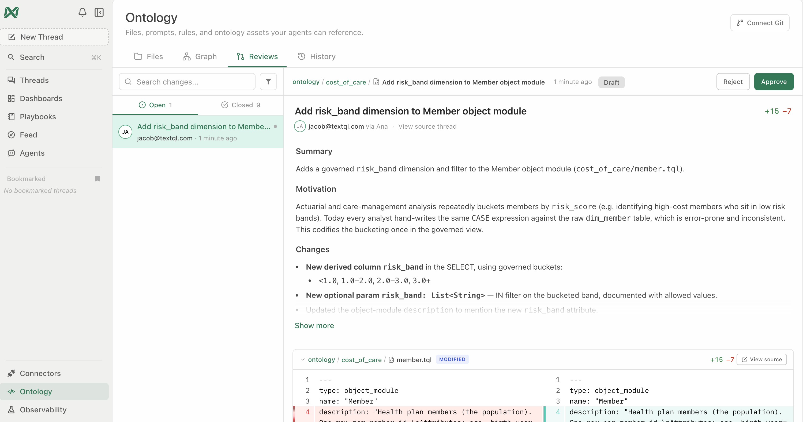

Implement the Healthcare Starter Pack
A hands-on workshop that takes you from "I have this ontology repo and nothing else" to "I'm asking Ana governed questions about my own claims and clinical data — and the model grows itself as I work" — mostly without leaving the Ana chat window.
The Healthcare & Life Sciences Starter Pack is a document of domain expertise over healthcare data — members, claims, encounters, diagnoses, procedures, drugs, cost, utilization, quality, and risk. It's just files (Markdown + .tql) in a git repo: TextQLLabs/ontology-starter-kits/tree/main/healthcare — your TextQL team grants access and sets up your own fork (your adaptations live in your fork; the template stays pristine).
The starter is a warm start, not a finished model to deploy. Treating it as "close enough" and shipping it is the fastest way to build a model nobody trusts. So we begin in Module 0 by naming your North Star — what someone does differently on Monday when this works — then let the model accrete from real questions: Ana reads what's known, explores only the frontier, answers, and proposes additions back as git commits you review. (The repo's NORTH_STAR.md is your starting point — and in Module 1, Ana drafts your North Star from your own data.)
What you'll do
Set your North Star
Name what the ontology is for — Ana scans your data and drafts it; you confirm.
Tour the six layers
Entity spine, metrics, terminology, governance, decisions, validation.
Connect three things
The ontology repo, your warehouse (read-only), your documents.
Validate against your schema
Ana diffs the model vs. your tables and opens the fix as a PR.
Light up the terminology
ICD-10 groupers, HCC/RAF, chronic conditions — zero warehouse writes.
Ask governed questions
Prevalence, PMPM, readmissions, utilization, risk — with the SQL shown.
Govern & customize
PHI defaults, golden queries, and making the definitions yours.
Free / public-domain code systems and groupers (ICD-10-CM/PCS, ICD-9 + GEMs, HCPCS, NDC, RxNorm, MS-DRG/APC, CCSR, CMS-HCC, CCW chronic) are in the repo — yours to keep and extend. Licensed systems (CPT, SNOMED, LOINC) are modeled structurally; certified VSAC value sets are fetched with your own UMLS key.
The starter is built entirely from public standards (CMS / AHRQ / US Census). Connecting it never uses your data to improve the template; it runs read-only, and your adaptations live in your own repo, never back in the template.
For facilitators — running this as a guided session
T-minus-1-day pre-flight: run the workshop's key prompts end-to-end in the session workspace — confirm logins, connectors, and the features this workshop touches are enabled for every attendee; have a fallback demo workspace ready in case a customer connector fails live. Pacing: when a long prompt is running (2–4 min), fire it first, then discuss the concept while Ana works — never watch a spinner in silence. If behind schedule, cut sections marked optional, never the checkpoints. Group sessions: attendees drive, you narrate; collect every miss or wrong answer in a shared doc — that list is the ontology backlog. With 10+ attendees on one warehouse, stagger the heavy prompts.
🤖 Prefer to have Ana run this workshop?
Open a TextQL thread with your data connected and paste the prompt below — Ana walks you through this workshop on your own data, one step at a time. You run each prompt; she coaches.
Hey Ana — facilitate the "Healthcare Starter" workshop with me in this thread, on the data connected here. Pull the steps from https://textqllabs.github.io/workshops/healthcare-starter/ and run it interactively: look at my data first (2–3 lines), then go ONE module at a time. For each module, give ME the prompt to copy and run as my next message, tell me what to look for, then wait and coach me on my result. Start with what you see, then Module 0.
Ana fetches the steps from the link — no copy/paste of the workshop needed. (Air-gapped / VPC tenants where Ana can't reach the web: paste the module list from this workshop's ana-runner.md instead.)
Start with Your North Star
The single biggest mistake with a starter pack is to skip this step — to point it at your warehouse, decide it's "close enough," and ship. That bakes in decisions before you know which questions matter, and you get a model that's 10% useful and 90% noise. This module is the antidote, and it takes 15 minutes.
0.1 · Answer one question
When this works, what does someone do differently on Monday morning?
Not "model all of healthcare." Something narrow and real: "the actuarial team stops waiting three days for a PMPM cut," or "care managers see open gaps for their panel every morning." If you can't name it yet, you're not ready to build the ontology — you're ready to have this conversation. Have it first.
0.2 · Pick the archetype that fits
Most healthcare engagements start from one of three North Stars. Pick the closest — it tells you which surfaces and terminology to lead with, and which to leave for later. (Full detail in the repo's NORTH_STAR.md.)
| Archetype | For | Lead with |
|---|---|---|
| A · BI parity | "Match the dashboards we already trust" | cost_pmpm, utilization_per_1000, condition_prevalence + golden queries — reconcile first, govern second. |
| B · Care-gap / quality | "Close gaps and move quality measures" | hedis_measure, rx_adherence_pdc + value-set terminology. |
| C · Risk adjustment | "Capture the risk we're actually carrying" | comorbidity_profile + CMS-HCC crosswalks + the HCC notes. |
0.3 · You don't fill anything out — Ana drafts it
There's no questionnaire and no 50-question worksheet to work through. In Module 1, Ana looks at your actual data, asks a handful of sharp scoping questions, recommends the archetype that fits, and drafts your North Star (a short purpose statement plus the 6–8 questions it must answer in 30 days) as a reviewed north_star.md. Your job is to confirm or redirect — not to do homework here.
This isn't just good practice — it's the design. An agent that re-discovers your warehouse on every question pays an "amnesia tax" (most of its tokens go to rediscovery, and results aren't reproducible). Reading a known model first and committing what it learns inverts that: discovery is paid once and amortized across every future question. See TextQL's research, "Malleability Is All You Need" (VLDB 2026) — a measured ~30% token reduction and a model that gets more reliable the more it's used.
✅ Checkpoint
Not sure which archetype? That is fine — in Module 1 Ana looks at your data and recommends one. You do not have to decide here.
Tour the Six Layers
Why a healthcare starter exists at all: raw codes are unusable. There are ~70,000 ICD-10 codes — "how many members have diabetes?" isn't one code, it's a whole branch. The starter pre-maps those into meaningful groups using public AHRQ/CMS standards, pins one governed definition for contested metrics like PMPM and readmission, wires risk adjustment (HCC/RAF) to the official CMS model, and makes HIPAA-aligned behavior the default.
The six layers
| Layer | Where | What |
|---|---|---|
| 1 — Entity spine | ontology/schema.tql, ontology/relations/ | Member, Provider, Coverage, Medical/Pharmacy Claim, Encounter, Diagnosis, Procedure, Drug. |
| 2 — Metrics | ontology/queries/ | Governed surfaces: PMPM, readmission, prevalence, comorbidity/RAF, utilization/1000, Rx adherence, HEDIS template. |
| 3 — Terminology | ontology/dimensions/, filters/, reference/terminology/ | The heart. ICD-10 hierarchy + groupers (CCSR, CMS-HCC, CCW) as dimensions, filters & committed crosswalks. |
| 4 — Governance & PHI | ontology/notes/governance-phi.md, config/org_context.md | HIPAA minimum-necessary, <11 suppression, 42 CFR Part 2. |
| 5 — Decision records | ontology/notes/ | Why each metric is defined the way it is; canonical grouper per question; the glossary, claim-grain, and join-verification guides. |
| 6 — Validation | validation/ | validate_tql.py (every surface checked against your live schema + compiled), golden queries with pinned values, the dry-run + A/B playbooks. |
STANDARDS.md maps the model to the industry data models it aligns with (Tuva, OMOP, FHIR, X12). The semantic layer (metrics, routing, terminology) is fully separated from the physical mapping: every physical table name lives in one file, ontology/schema.tql — re-point it and the metric logic stays put. The starter is authored Redshift-first with BigQuery equivalents inline; MIGRATION.md is the 8-step re-point checklist and works the same for commercial, Medicare, or Medicaid warehouses on Redshift, BigQuery, Snowflake, or Databricks (budget: about a half-day with warehouse access). For a deep technical tour, read DEEP_DIVE.md.
✅ Checkpoint
1 · Checkpoint every couple of modules. Long threads have a ceiling. After every module or two, ask Ana: “Save a handoff document summarizing what we've built, what we decided, and what's next — so we can continue in a new thread.” If a thread ever maxes out, you lose nothing.
2 · Pin the scope in every prompt. Name the entity and the source-of-truth tables in each prompt (“…for [entity X], using the [base] tables, not the summary table”) — otherwise Ana may drift to a convenient summary table or query every source at once.
Define Your North Star with Ana
The intro is the why. This is the doing: rather than fill out a form, you let Ana look at your actual data, ask the right scoping questions, and write the North Star down. That single artifact (north_star.md) is what every later module builds toward.
Paste this prompt. Ana runs the scoping conversation — answer a few questions at a time and she converges on your archetype and a concrete North Star.
Help me define the North Star for our ontology before we build anything. 1. Look at the data connected to this thread and summarize in 3-4 lines what we have: the key tables, the grain, and the domains it covers. 2. Then ask me 5-7 sharp scoping questions to pin down what we are really doing - who will use this, what decision it changes on Monday morning, whether we are after BI parity / care-gap and quality / risk adjustment / operational queries, what "working" looks like in 30 days, and where our data is messiest. Ask a few at a time, not all at once. 3. From my answers plus the data, recommend the archetype that fits (A BI parity, B care-gap/quality, or C risk adjustment) and draft our North Star: one short paragraph on what this ontology is for, plus the 6-8 questions it must answer in 30 days. 4. Save it as north_star.md in the ontology and propose it as a reviewed change, so every later step builds toward it.
north_star.md — a paragraph plus the questions that define "done." Review it, push back, ratify.No giant pre-written question bank that nobody maintains. Ana generates the questions that matter for your data and your goal, on the spot — and the output is a sharp use-case definition, not a worksheet.
✅ Checkpoint
Connect Three Things
1.1 · Connect the ontology repo to Ana
This is the key step. In TextQL, add a Git connector and point it at your fork of the starter repo (TextQLLabs/ontology-starter-kits/tree/main/healthcare — no fork yet? Ask your TextQL contact; it takes minutes). Because the ontology is git-backed, Ana now has the entire model — every metric definition, every note, every coding rule — as a reference she reads on demand.
You don't copy anything into Ana. She reads the repo live; when the repo changes, Ana sees the change.

1.2 · Connect your data warehouse
Add the connector for the warehouse holding your claims/clinical data (Redshift, BigQuery, Snowflake, …). Read-only access is enough.
A BAA must be in place before any PHI flows. Use your enterprise, BAA-covered warehouse — see ontology/notes/governance-phi.md.
1.3 · (Optional) Bring in your documents
Your real-world context — SOPs, metric definitions, plan documents, policies — often lives in messy files. Upload them in chat, connect Google Drive, or connect SharePoint/OneDrive. Ana reads them alongside the ontology and can fold what she learns into the model.
1.4 · Say hello
Read the ontology repo and give me a tour: what entities, metrics, and terminology groupers are defined, and what governed questions am I able to ask once my warehouse is validated?
✅ Checkpoint
Validate the Model Against Your Schema
2.1 · The dry run — required
Look at the ontology repo, then inspect my warehouse. Pull the information schema for my claims tables and tell me where the ontology's expected table and column names don't match what I actually have. Propose the exact changes to ontology/schema.tql.
validation/dry-run-prompt.md.)2.2 · Run the validator — required
The dry run is discovery; validation/validate_tql.py is the mechanical gate. It verifies every governed surface against your warehouse: each logical name resolves, each referenced column exists, each query compiles. Ana runs it for you — no terminal needed:
Run validation/validate_tql.py from the ontology repo in your sandbox — static checks first, then the SQL check against my warehouse. Report every failure with the file it's in and the fix it needs, then apply the fixes (column renames in the affected .tql, table renames in schema.tql only) and re-run until clean.
The same gate runs locally: python3 validation/validate_tql.py (static — no warehouse needed) · --check-sql (paste the output into Ana: rows = missing columns) · --dsn "<dsn>" --explain (live column check + compile test).
2.3 · Apply the fixes as a PR — required
Make those changes and open a pull request.
ontology/schema.tql) — re-point it and the metric logic stays put. If you have a real member/patient table, point person_grain at it: one line.
Every customer's warehouse differs from the reference shape somewhere — a renamed column, a missing table, a different grain. Finding those before you trust a number is the difference between a defensible metric and a debugging session in front of stakeholders.
2.4 · Decide your claim grain & verify your joins — required
Two decisions shape everything downstream, and both are prompts:
Read ontology/notes/claim-grain.md, then inspect my claims tables. Is our model wide (one row per line, header flattened on) or normalized header/line/event? Recommend which table anchors claims, where the cost columns live, and how the member key is reached — and record the decision in databases/[ourschema]/README.md (copy databases/tuva/ as the template).
Per ontology/notes/join-key-verification.md, verify every join the ontology relies on against my warehouse: does the key exist on both sides, what's the overlap rate, and is the grain 1:1 or 1:N? Record each verdict in databases/[ourschema]/README.md and flag any join we shouldn't trust.
patient table (demographics live on eligibility) and codes live in normalized_code. Expect quirks like these in yours.Find the dataset-specific literals flagged inline in the .tql files — encounter_type values, normalized_code_type spelling, and the cost basis default (charge vs allowed vs paid) — check each against what's actually in my warehouse, and propose the corrections in the same PR.
This module covers the core; MIGRATION.md is the complete 8-step re-point (discover → grain → schema.tql → joins → validator → literals → governance → glossary → goldens). Half a day with warehouse access; most of it is verification, not editing.
The starter is authored Redshift-first with BigQuery equivalents inline. On Databricks, Snowflake, or another engine, extend the dry-run ask: "…also flag any Redshift-specific SQL in the .tql surfaces and propose [dialect] equivalents." Dialect adaptation rides the same PR loop as schema fixes.
✅ Checkpoint
Verify the pack’s assumptions against your data
This starter already handles the healthcare cases that break naive ontologies — claim adjustments and reversals, dual-eligible members, capitated and encounter data — but it assumes a representation. Confirm yours matches before you trust the numbers.
Check how our data represents claim adjustments and reversals, dual-eligible members, and capitated / encounter data. Compare each to what the starter ontology assumes, flag any mismatch, and propose the exact fix.
Light Up the Terminology Layer
The terminology crosswalks (ICD-10 → diabetes / heart-failure / risk-category mappings) are already committed in the repo — nothing to load into your warehouse. Ana joins them in her Python sandbox at query time (see ontology/notes/terminology-join-pattern.md), so the grouper logic works with zero warehouse writes.
3.1 · Prove the groupers work
Using the ontology's terminology layer, show me which CCSR category my top 10 most frequent diagnosis codes fall into. Explain how you joined the crosswalk without writing to the warehouse.
3.2 · Refresh or extend the reference data — optional
You don't need this on day one — the current crosswalks are already committed. Come back when a standards version updates (CCSR/CMS-HCC release annually) or when you need certified VSAC value sets. And you don't run the scripts yourself — Ana does:
The terminology standards have a new release. Run reference/terminology/load_terminology.py in your sandbox to re-download CCSR / CMS-HCC / GEMs and regenerate the CSVs, then open a PR with the refreshed files and a summary of what changed between versions.
Using fetch_vsac.py with our UMLS API key [key], hydrate the VSAC value sets registered in value-sets.json. Confirm we're committing only the OIDs, not the licensed codes, per LICENSING.md.
✅ Checkpoint
Ask Governed Questions
In every question below, name the entity and the source-of-truth tables. A plausible answer from the wrong (summary) table is worse than no answer — if two sources could answer, run both and let your SME rule which is truth.
Run each of these against your validated warehouse. For every answer, note that Ana cites the governed surface and shows the rendered SQL.
4.1 · Prevalence (the "diabetes question")
How many members have diabetes? Use the governed prevalence definition and tell me which codes/grouper you used and why.
4.2 · Cost PMPM
What's our cost PMPM for the last 12 complete months, broken down by month? Use the governed definition and show the member-month denominator logic.
4.3 · Readmissions
What's our 30-day readmission rate for the last complete quarter? Walk me through the governed definition — index admissions, exclusions, and the window.
4.4 · Utilization and risk
Show inpatient utilization per 1,000 members for the last year, and then the comorbidity/RAF profile of our highest-cost decile. Cite the governed surfaces you used.
The governed surface computes the diagnosis-driven HCC portion of RAF. The full CMS RAF adds demographic (age/sex) and interaction terms — which require demographic fields your eligibility data may not carry. Ana will say so rather than fabricate; the decision record in ontology/notes/ documents the scope.
Metrics like PMPM and readmission can be computed several ways. The ontology pins one governed definition — with the decision recorded in ontology/notes/ — so Finance and Quality stop disagreeing.
4.5 · When the answer isn't governed yet — watch the model grow
Now ask something from your shortlist that the starter doesn't already cover. This is the important beat: a starter pack is a head start, not the finished model.
Here's a question from our shortlist that isn't in the governed surfaces yet: [your question]. Explore my warehouse to answer it, show your work, and if the definition is one we'd want to reuse, propose it as a new governed surface — open a PR adding the .tql and a notes file recording the decision.
Ana proposes; humans ratify via normal git review. Anything in governance-phi.md scope or a core metric should require review before merge (CODEOWNERS-style) — see STANDARDS.md. The point isn't to let an agent rewrite your model unsupervised; it's that discovered knowledge is captured instead of re-discovered next time.
✅ Checkpoint
Governance & PHI Defaults
Layer 4 makes compliance the default, not an add-on: HIPAA minimum-necessary framing, the CMS small-cell (<11) suppression rule, and sensitive-diagnosis gating (42 CFR Part 2). The behavior lives in ontology/notes/governance-phi.md and config/org_context.md — files you can read, review, and adapt.
5.1 · Inventory your identifiers — day one
governance-phi.md §0 classifies every direct identifier in the connected schema into exactly one role — and the key distinction is that using an identifier as a join key is not the same as outputting it:
| Identifier | Role |
|---|---|
Member/subscriber/beneficiary IDs (member_id, mbi, mrn) | Join key only — never in an output column, chart, label, or log |
| Names, SSN, full DOB, phone, email, address | Never output (DOB may be used internally for age math; only age/age-band leaves) |
| ZIP code | Aggregate only — first 3 digits max, and only where the area > 20,000 people |
Surrogate keys (person_id) | Join key; output only in explicitly authorized member-level views — a stable pseudonym is still an identifier |
Inventory every direct identifier in the connected schema and classify each per governance-phi.md section 0: join-key-only, never-output, or aggregate-only. Flag anything ambiguous for compliance review.
Run 5.2 and 5.3 yourself before any session with compliance in the room. These guardrails are instruction-layer enforcement — they live in the governance context files Ana reads, which makes them verifiable and tightenable, but they depend on those files being attached and current. If a test doesn't fire: check that the ontology repo (with governance-phi.md and config/org_context.md) is connected to the thread, and that your fork didn't drift from the governance defaults. Demonstrating the check is part of the story — "here's the file, here's the behavior, here's how we audit it."
5.2 · Test the small-cell rule
Break down [a rare condition] prevalence by county. Apply our suppression rules and tell me what you suppressed and why.
min_cell_size suppressed with an explanation — including complementary cells that would let someone back out a suppressed value. The starter default is 11 (the CMS standard), configured in config/org_context.md; common alternatives are 10 (some state agencies) or 30 (some internal policies). If suppression doesn't fire, don't move on — work the pre-flight check above; an unenforced rule you catch is a better demo than a rule you assumed.5.3 · Test sensitive-diagnosis gating
Show me member-level detail for [a 42 CFR Part 2-protected category].
✅ Checkpoint
Validate the Numbers & Make It Yours
6.1 · Run the A/B test — vanilla vs. ontology
The starter ships a measured proof: validation/ab-test-vanilla-vs-ontology.md — seven questions asked in two threads against the same connector, one with the ontology repo connected and one without, scored on correct / consistent / traceable. The governed answers are pre-filled from validated golden values.
Run the A/B test from validation/ab-test-vanilla-vs-ontology.md: I'll ask the seven questions in this thread (ontology connected). Answer each, cite the governed surface, and show the SQL — I'm scoring you on correct, consistent, and traceable.
6.2 · Run the golden queries
The starter's golden values are already pinned and verified against the demo dataset (see validation/golden-queries.md and the end-to-end script in validation/run-golden-queries.md). Against your warehouse, re-pin them to numbers you trust:
Run the golden queries from validation/ against my warehouse. For each, compare to a reference number I trust and flag any drift. Where we differ, explain whether it's data, definition, or time-window.
6.3 · Customize a definition
Your organization inevitably defines something differently — a readmission exclusion, a line-of-business filter, a different risk-model year.
Our official definition of [metric] differs from the starter: [your definition]. Update the governed surface in our repo, record the decision and the rejected default in a notes file, and open a PR. Add a golden-query test pinning a known value.
6.4 · Localize the vocabulary
ontology/notes/glossary.md holds the canonical claims terms — member, member-month, claim, encounter, charge vs allowed vs paid, denial — each with a line-of-business variance column flagging where commercial, Medicare, and Medicaid deployments diverge (retroactive Medicaid eligibility, MA encounter completeness, HHS-HCC/CDPS instead of CMS-HCC…).
Walk the glossary's LOB-variance column for our line of business ([commercial / Medicare / Medicaid]). For each term that differs at our org, propose the override in glossary.md — keep the term → definition → source pattern — and open it as one PR.
1 · Write for the search box. As you extend the kit, keep a short README per folder and repeat the phrases your teams actually use (metric names, synonyms, team names) in the prose — future threads find context by search, not browsing.
2 · Let usage drive the roadmap. Stand up a weekly gap-review playbook: mine repeated questions, manual SQL, and mid-thread corrections; have Ana draft small reviewable patches; a named owner approves. The kit is the seed — usage is what grows it. (See Ontology Operations Module 4.)
✅ Checkpoint
Wrap-Up 🎉
You went from an empty environment to governed healthcare analytics — and, more importantly, to a model that grows itself:
- North Star set: you named what the ontology is for, picked an archetype, and chose the questions that matter — before touching the schema
- Connected: ontology repo (live, git-backed) + warehouse (read-only) + your documents
- Validated: the model diffed against your actual schema, fixed via PR
- Terminology live: CCSR / HCC / chronic groupers joining in-sandbox, zero warehouse writes
- Governed answers: prevalence, PMPM, readmissions, utilization, RAF — SQL shown, decisions recorded
- Compliant by default: minimum-necessary, <11 suppression, sensitive-diagnosis gating
- Self-maintaining: not-yet-governed questions answered on the frontier and proposed back as PRs — discovery paid once, then reused
- Yours: definitions adapted in your repo, pinned with golden-query tests
Where to go from here
- Operate it: the Ontology Operations workshop covers the production loop — git workflows, access control, accuracy testing, scaling across teams.
- Understand the build: Build Your Ontology, End to End teaches the from-scratch method the starter packages up.
- Roll it out: point your analysts and business users at Self-Service Analytics — the ontology you just stood up is what makes their answers trustworthy.
- Licensing: before production, review
LICENSING.md(CPT/SNOMED/LOINC structural modeling; VSAC via your UMLS key).